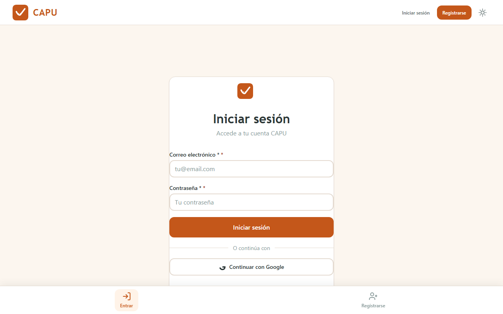
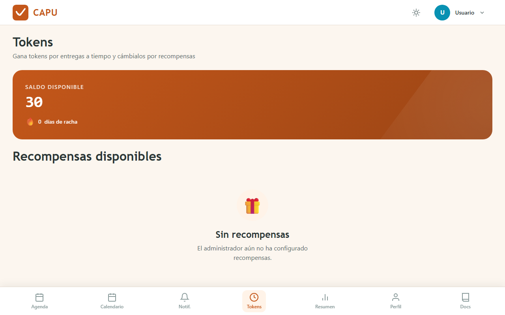
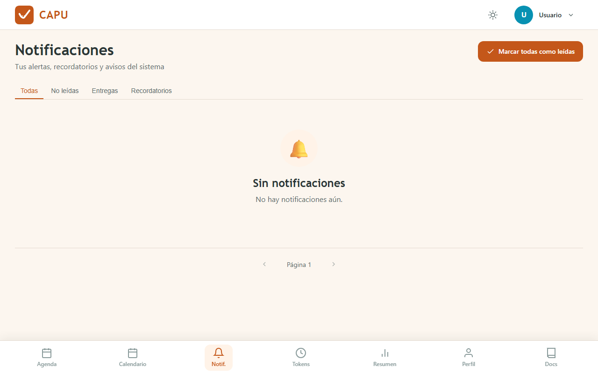

Índice
1. Introducción
Este documento es el Manual de Usuario del sistema CAPU, desarrollado para la materia de Gestión de Proyectos de Software. Su propósito es explicar de forma clara cómo utilizar la aplicación, qué hace cada módulo y cómo interpretar las pantallas principales del sistema.
CAPU es una agenda inteligente con recordatorios y recompensas (tokens), integrada a Google Classroom. Permite a los estudiantes organizar tareas, registrar avances, recibir alertas y mantenerse motivados mediante gamificación.
2. Objetivo y alcance
Objetivo: Optimizar la gestión del tiempo académico mediante recordatorios automáticos, seguimiento de avances y un sistema de recompensas con tokens, integrado con Google Classroom.
Alcance funcional:
- Autenticación de usuarios (registro, inicio de sesión, recuperación, Google OAuth).
- Sincronización de cursos, tareas y entregas desde Google Classroom.
- Agenda con filtros, calendario y detalle de tareas.
- Registro de avance y entrega de tareas.
- Gamificación: tokens, racha, recompensas y canje.
- Alertas, recordatorios y centro de notificaciones.
- Resumen/métricas y perfil de usuario.
3. Requisitos, instalación y ejecución local
3.1 Requisitos
- Node.js 22.5 o superior.
- Navegador web moderno (Chrome, Edge o Firefox).
- Opcional: credenciales de Google Cloud para sincronización real con Classroom.
3.2 Instalación y ejecución
| Paso | Acción | Resultado esperado |
|---|---|---|
| 1 | Clonar el repositorio: git clone https://github.com/VictorMBojorquez/Capu.git | Se obtiene el código fuente del proyecto. |
| 2 | Entrar y instalar: cd capu y npm install | Se instalan las dependencias. |
| 3 | Configurar entorno: copy .env.example .env | Se crea el archivo de configuración. |
| 4 | Ejecutar: npm start | El servidor inicia en http://localhost:3000. |
| 5 | Abrir el navegador en http://localhost:3000 | Se muestra la pantalla de acceso de CAPU. |
4. Uso del sistema por módulos
| Módulo | Qué hace | Cómo se usa |
|---|---|---|
| Acceso / Registro | Permite crear cuenta e iniciar sesión. | El usuario ingresa correo y contraseña, o usa Google si está configurado. |
| Agenda | Muestra tareas sincronizadas y su estado. | Se revisan tareas, se filtran por curso/estado y se abre el detalle. |
| Sincronización | Importa cursos y tareas desde Classroom. | Se pulsa “Sincronizar con Classroom”; en modo demo carga datos de prueba. |
| Tokens y recompensas | Gestiona la gamificación. | Al entregar tareas se ganan tokens; se pueden canjear recompensas. |
| Notificaciones | Muestra alertas y recordatorios. | Se revisa el centro de notificaciones y las preferencias. |
| Resumen / Perfil | Muestra métricas y datos del usuario. | Se consulta el progreso y se ajusta la configuración personal. |
5. Capturas del sistema (explicadas en detalle)
Las siguientes capturas fueron tomadas desde la aplicación CAPU ejecutada localmente. En cada figura se describe lo que se observa, para qué sirve la pantalla y qué debe hacer el usuario.

Descripción detallada
- Qué se observa: La pantalla de acceso al sistema CAPU con el formulario de inicio de sesión. Se aprecian los campos para correo electrónico y contraseña, el botón para ingresar y las opciones de navegación para registro/recuperación.
- Propósito: Permitir que el usuario autenticado acceda a su cuenta para visualizar sus tareas, tokens y notificaciones.
- Cómo se usa: El usuario escribe su correo y contraseña, luego presiona el botón de inicio de sesión. Si no tiene cuenta, puede ir a registro.
- Resultado esperado: Al autenticarse correctamente, el sistema redirige a la agenda principal del usuario.

Descripción detallada
- Qué se observa: La vista principal de Agenda con la lista de tareas cargadas. Se muestran tarjetas/tareas con título, curso, fecha límite y estado. También se observan controles de navegación y acciones disponibles en la interfaz.
- Propósito: Centralizar las actividades académicas del estudiante en un solo lugar, facilitando la organización y el seguimiento.
- Cómo se usa: El usuario revisa las tareas, puede filtrar por curso o estado, abrir el detalle de una tarea y usar el botón de sincronización para actualizar desde Classroom.
- Resultado esperado: El estudiante identifica rápidamente qué tareas tiene pendientes, en progreso, vencidas o entregadas.

Descripción detallada
- Qué se observa: La agenda con tareas y sus indicadores de estado/avance. La interfaz permite visualizar el progreso asociado a las actividades.
- Propósito: Dar seguimiento al progreso de cada tarea antes de su entrega final, evitando dejar todo para el último momento.
- Cómo se usa: El usuario selecciona una tarea y actualiza el porcentaje de avance (0 a 100). El sistema refleja el cambio de estado cuando corresponde.
- Resultado esperado: El avance queda guardado y la tarea puede pasar a estado “en progreso”, ayudando al control personal.

Descripción detallada
- Qué se observa: La agenda después de completar una tarea. La tarea aparece con estado de entregada y el sistema refleja la recompensa asociada al cumplimiento.
- Propósito: Confirmar que la entrega fue registrada y mostrar la gamificación (tokens) como incentivo por cumplir a tiempo.
- Cómo se usa: El usuario marca la tarea como completada desde el detalle o la acción disponible. El sistema calcula tokens según la regla definida (base, anticipación, racha).
- Resultado esperado: La tarea cambia a “entregada”, se registran tokens y se actualiza el historial/saldo del usuario.

Descripción detallada
- Qué se observa: La pantalla de Tokens/Recompensas, donde se visualiza el saldo de tokens, la información de racha y el catálogo de recompensas disponibles para canje.
- Propósito: Motivar al estudiante mediante un sistema de recompensas por cumplimiento y constancia.
- Cómo se usa: El usuario consulta su saldo, revisa las recompensas y selecciona “canjear” si cuenta con tokens suficientes.
- Resultado esperado: Al canjear, se descuenta el costo en tokens y se registra el movimiento en el historial.

Descripción detallada
- Qué se observa: El panel de resumen con indicadores de desempeño del usuario, como tareas completadas, estado general y métricas relacionadas con la actividad.
- Propósito: Ofrecer una visión clara del progreso académico y del comportamiento de cumplimiento del estudiante.
- Cómo se usa: El usuario entra al módulo de Resumen para consultar sus estadísticas y evaluar su rendimiento.
- Resultado esperado: El estudiante identifica áreas de mejora (tareas vencidas, pendientes) y su nivel de avance.

Descripción detallada
- Qué se observa: La agenda con opciones de filtrado/organización de tareas. El usuario puede enfocar la vista en un subconjunto de tareas según su necesidad.
- Propósito: Facilitar la priorización, por ejemplo enfocándose en tareas vencidas, pendientes o por curso.
- Cómo se usa: El usuario selecciona el filtro deseado (curso, estado u otro criterio disponible) y la lista se actualiza.
- Resultado esperado: Se muestra solo la información relevante para la decisión inmediata del usuario.

Descripción detallada
- Qué se observa: La interfaz de CAPU adaptada a un viewport móvil. Los elementos se reorganizan para mantener la usabilidad en pantallas pequeñas.
- Propósito: Permitir el uso del sistema desde dispositivos móviles sin perder funcionalidad esencial.
- Cómo se usa: El usuario accede desde el navegador del celular o reduce el tamaño de la ventana; la interfaz se ajusta automáticamente.
- Resultado esperado: Navegación clara, botones accesibles y contenido legible en formato móvil.

Descripción detallada
- Qué se observa: El módulo de notificaciones donde se concentran avisos del sistema, como recordatorios de tareas próximas, vencidas o eventos relevantes.
- Propósito: Mantener informado al usuario sobre sus pendientes y reducir el riesgo de olvidar entregas.
- Cómo se usa: El usuario entra a Notificaciones, revisa los avisos y puede marcar como leídas según las opciones disponibles.
- Resultado esperado: El usuario conoce sus alertas pendientes y puede tomar acción oportunamente.

Descripción detallada
- Qué se observa: La sección de Documentación integrada en la aplicación, con descripción del sistema, funcionalidades y galería de capturas.
- Propósito: Brindar ayuda dentro del propio sistema para que el usuario entienda rápidamente cómo usar CAPU.
- Cómo se usa: El usuario navega al apartado “Docs/Documentación” desde el menú inferior.
- Resultado esperado: El usuario consulta la guía visual sin salir de la aplicación.
6. Solución de problemas
| Problema | Causa probable | Solución recomendada |
|---|---|---|
| La página no carga en localhost | El servidor no está iniciado o el puerto está ocupado | Ejecutar npm start, confirmar el puerto y abrir la URL indicada en consola. |
| No se sincronizan tareas de Classroom | Faltan credenciales OAuth o no hay conexión | Configurar GOOGLE_CLIENT_ID y GOOGLE_CLIENT_SECRET en .env; en demo usar el adaptador mock. |
| No puedo iniciar sesión | Credenciales incorrectas o usuario no registrado | Verificar correo/contraseña o crear una cuenta nueva. |
| No veo mis tokens actualizados | La tarea no se marcó como entregada correctamente | Completar la tarea desde la interfaz y revisar el historial de tokens. |
7. Conclusión
CAPU integra organización académica, seguimiento de tareas y gamificación en una sola plataforma web. Este manual describe su uso de forma detallada, apoyándose en capturas tomadas desde la aplicación ejecutada localmente, para que el usuario pueda comprender cada pantalla y realizar las acciones principales del sistema.
El proyecto cumple con los requisitos funcionales establecidos y cuenta con evidencia de pruebas automatizadas, documentación y paquete de entrega para la materia de Gestión de Proyectos de Software.